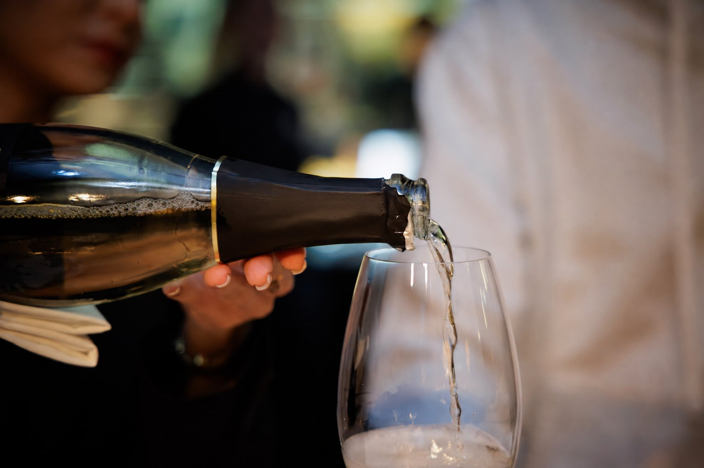

01
Wine
White Burgundy, Chablis, Loire, Mosel, Wachau and Moravia; reds from Burgundy, Bordeaux, Piedmont and Tuscany. The selection is built for acidity, smoke, fish, oysters and aged meat.
Section 03 · Drink
Champagne with oysters, wines for fish or meat, signature cocktails with a subtle Japanese-Nordic twist, and a carefully chosen non-alcoholic selection.

White Burgundy, Chablis, Loire, Mosel, Wachau and Moravia; reds from Burgundy, Bordeaux, Piedmont and Tuscany. The selection is built for acidity, smoke, fish, oysters and aged meat.
The champagne list moves between Côte des Blancs, Montagne de Reims and Vallée de la Marne: growers, grand maisons and a few bottles held back for the right table. Ask for the current arrivals before you choose oysters.
The classics, in the house specification - Classic cocktails by River & Oyster, 2026.
Gin • Suze • Dolin Blanc Vermouth de Chambéry • white peach
345 CZK
Garage 22 Summer gin • Dolin Rouge Vermouth de Chambéry • Campari • strawberry • black tea
345 CZK
Beluga vodka • Gloria Single Origin Coffee liqueur • espresso • Marlenka honey cake
345 CZK
fat washed gin • infused spiced vermouth • saline solution • pickled juice • onion
345 CZK
The cocktail list is built in close conversation with the kitchen: precise prep, house ingredients, premium spirits and flavours that sit naturally beside oysters, fish and smoke.
Garage 22 River & Oyster gin • gooseberry • grapes • gyokuro • kombu seaweed
345 CZK
Butter-washed Jamaican rum 12y • apple-sourdough syrup • walnut
345 CZK
Vodka • strawberry • elderflower liqueur • lime • immortelle syrup • milk whey
345 CZK
Pai Mu Tan • apricot • house non-alcoholic vermouth • oleo saccharum • verjus
345 CZK
Vodka, gin, rum and agave, whisky and cognac, then Montilla-Moriles, ratafia and Czech fruit eaux-de-vie. Poured to sip after the oysters, or to close the evening at the bar.
Served in 4 cl measures; vodka and fruit eaux-de-vie 2 cl, ratafia 8 cl.
House tonic and lemonade, still and sparkling water, beer, and coffee and loose-leaf teas chosen with the same care as the wine.